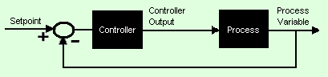

I/O PCB Theory of Operation
This document provides operational details for the Input Output (I/O) PCB.
I/O PCB Hardware Description
The Input Output PC provides the interface to all of the sensors in the instrument, except the stepper motor home and index sensors.
Seven distinct groupings of circuit functions are on the card:
- Digital inputs
- Analog inputs
- Analog conversion
- Luminometer counter
- Heater and cooler controllers and timers
- Serial and parallel ports
- ISA bus interface
Note: The analog circuitry is separated physically and functionally from the digital areas to limit noise and coupling.
Instrument Interface
Except for those signals that use dedicated connectors (serial ports, luminometer), the I/O interface signals to the instrument via the 96-pin connector along the bottom edge of the PCB.
Non-Volatile Ram (NVRAM)
Features and notes:
- 32 KB CMOS RAM provides non-volatile storage of vital system information.
- Can be written to and read from with a single wait state bus cycle.
- Backed up with either an internal chip-mounted battery or an alkaline battery that is attached via the battery connector.
PID Loop
In Access instruments, device temperatures are controlled using PID.
- P = proportional: The comparative relation of set point to error.
- I = integral: The accumulated average of errors over time.
- D = derivative: The rate of change of errors over time.
Feedback is incorporated to allow control of certain devices.

Luminometer Counter and Prescaler
Features and notes:
- Two complimentary signals are sent from the luminometer analog board to the I/O PCB.
- The signals are conditioned by a fixed prescaler on the luminometer card (divide by 4).
- The prescaler is a circuit that increases the frequency limit of a counter by dividing the input frequency by an exact amount.
- The signal is counted for a predetermined duration as determined by software (nominally one second).
- The counter-chain is a 24-bit binary counter.
- The count yields an effective range of 0 to 67,108,864 counts/second (including the fixed divide-by-4 prescaler).
- The luminometer (PMT, analog board, and counter-chain collectively) is linear to about 24,000,000 counts/second and rolls off at 30,000,000 PMT counts/second.
LIS Port Connection
Features and notes:
- The LIS connector has two versions, depending on the revision of the I/O PCB.
- The newest versions have male connectors.
- A port adapter can be ordered when updating from older versions of I/O PCBs.
- The Access serial connection (for LIS) receives on pin #3, transmits on pin #2, and pin #5 is ground.
COM4 Connection
Features and notes:
- The COM4 connector is located on the I/O PCB on the right side of the instrument.
- The newest version I/O PCB has a COM4 connector that is the opposite gender of the previous versions.
- The Allergy bar code reader connects to the COM4 connector for international customers.
Caution: With the new version of I/O PCB, it is possible to connect the printer cable to the COM4 connector. Connecting the printer cable to the COM4 connector damages the I/O PCB.
I/O PCB Revision History
Three versions of the I/O PCB exist. Only the 7597 version is active and available; however, older versions of this PCB can be found installed in some instruments.
| I/O PCB Part Number | PCB Revision Number | Instrument S/N and Date Cut-In | PMT Type | Features With V3.14 and Greater Software |
|---|---|---|---|---|
| 1482F (Obsolete) | Rev 33 | 001 to 179, Cut-in date 1992 | Oldest | Standard features only |
| 7081C (Obsolete) | Rev 34 And Rev 35 | 180 to 16XX, Cut-in date October 1993 | Old |
|
| 7597A | Rev 48 | 16XX and up, Cut-in date June 1996 | New |
|